| Subject | sub-PS11 |
|---|---|
| Session | ses-baseline |
| Tracer | 11CPS13 |
| Methods | MRTM1, MRTM2, Logan, MA1 |
| Reference region(s) | Left-Cerebellum-Cortex, Right-Cerebellum-Cortex |
| High-binding region(s) | Left-Putamen, Right-Putamen |
| k2prime | 0.046526238322258 |
| t* (seconds) | 540.0 |
| Volumetric smoothing (FWHM) | 6.0 mm |
| Surface smoothing (FWHM) | 5.0 mm |
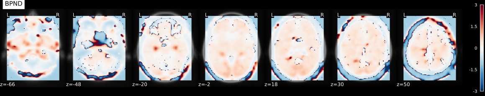
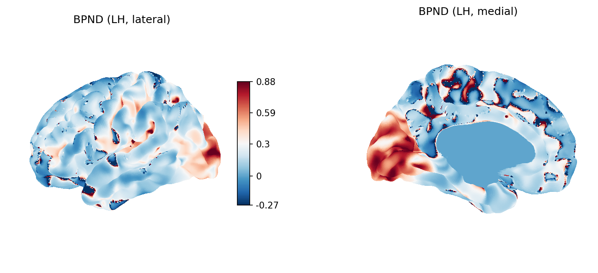
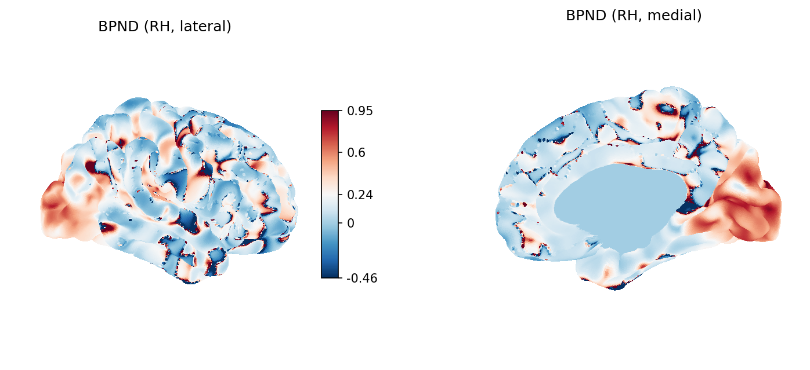
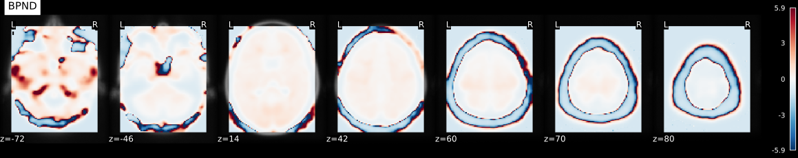
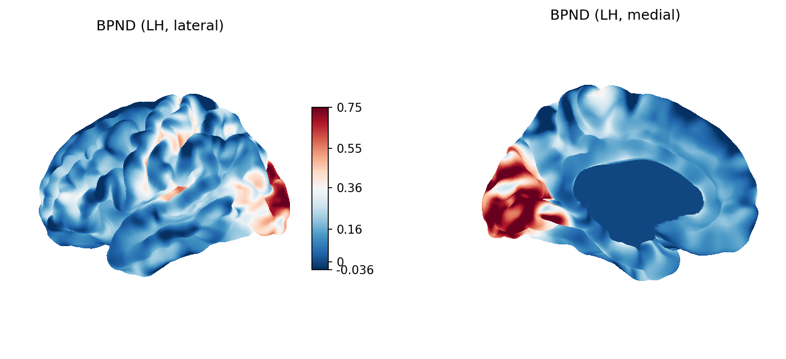
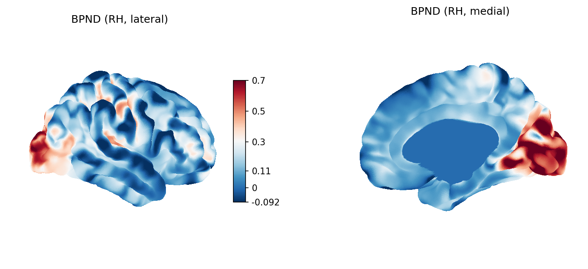
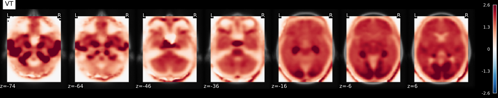
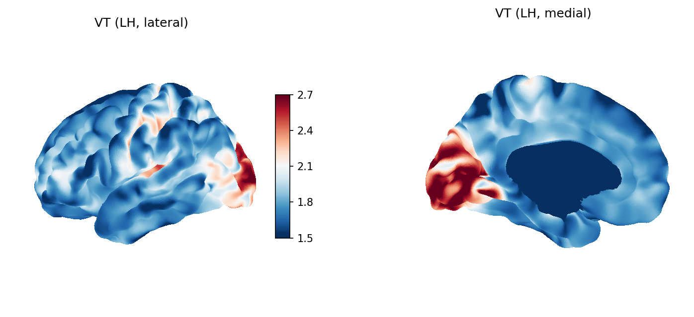
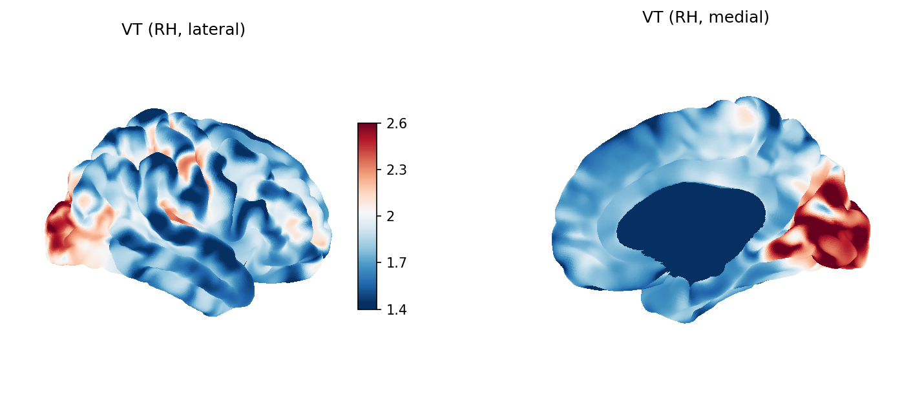
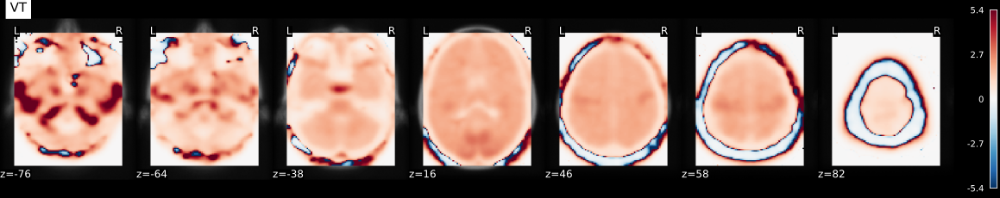
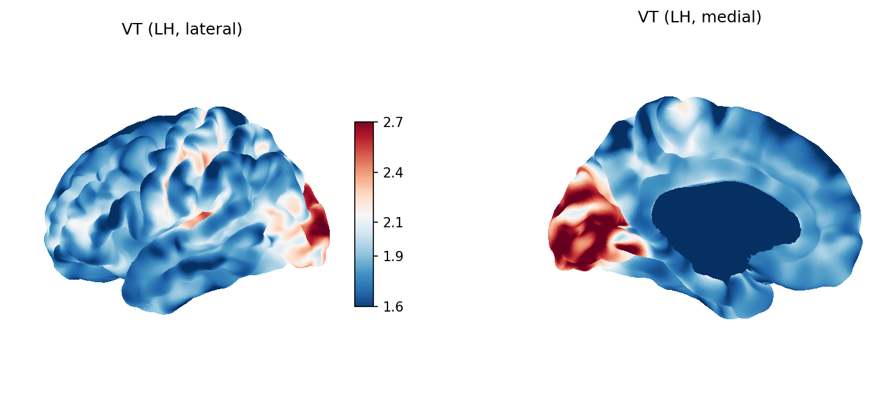
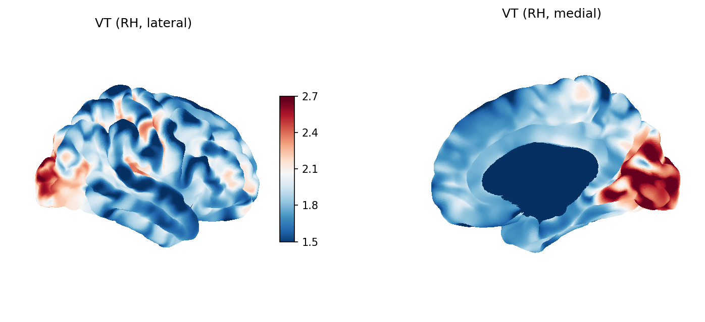
| Region | R1 | k2 | k2a | k2-k2a |
|---|---|---|---|---|
| Left-Cerebral-White-Matter | 0.713 | 0.030 | 0.023 | 0.053 |
| Left-Lateral-Ventricle | 0.388 | 0.015 | 0.017 | 0.031 |
| Left-Inf-Lat-Vent | 0.631 | 0.047 | 0.029 | 0.076 |
| Left-Cerebellum-White-Matter | 0.764 | 0.038 | 0.033 | 0.071 |
| Left-Cerebellum-Cortex | 0.996 | 0.017 | 0.017 | 0.034 |
| Left-Thalamus | 0.988 | 0.082 | 0.063 | 0.145 |
| Left-Caudate | 0.841 | 0.018 | 0.018 | 0.036 |
| Left-Putamen | 1.080 | 0.053 | 0.042 | 0.095 |
| Left-Pallidum | 0.789 | 0.062 | 0.046 | 0.108 |
| Brain-Stem | 0.696 | 0.053 | 0.045 | 0.098 |
| Left-Hippocampus | 0.804 | 0.048 | 0.026 | 0.074 |
| Left-Amygdala | 0.735 | 0.047 | 0.038 | 0.085 |
| CSF | 0.801 | 0.039 | 0.038 | 0.077 |
| Left-Accumbens-area | 0.920 | 0.081 | 0.069 | 0.150 |
| Left-VentralDC | 0.762 | 0.056 | 0.043 | 0.099 |
| Left-choroid-plexus | 0.673 | 0.071 | 0.058 | 0.129 |
| Right-Cerebral-White-Matter | 0.718 | 0.029 | 0.023 | 0.052 |
| Right-Lateral-Ventricle | 0.394 | 0.016 | 0.019 | 0.035 |
| Right-Inf-Lat-Vent | 0.555 | 0.029 | 0.018 | 0.047 |
| Right-Cerebellum-White-Matter | 0.764 | 0.042 | 0.036 | 0.077 |
| Right-Cerebellum-Cortex | 0.998 | 0.016 | 0.016 | 0.031 |
| Right-Thalamus | 0.988 | 0.101 | 0.079 | 0.180 |
| Right-Caudate | 0.869 | 0.013 | 0.012 | 0.025 |
| Right-Putamen | 1.051 | 0.046 | 0.037 | 0.083 |
| Right-Pallidum | 0.787 | 0.057 | 0.043 | 0.100 |
| Right-Hippocampus | 0.780 | 0.049 | 0.027 | 0.076 |
| Right-Amygdala | 0.711 | 0.047 | 0.038 | 0.085 |
| Right-Accumbens-area | 0.924 | 0.057 | 0.051 | 0.108 |
| Right-VentralDC | 0.759 | 0.055 | 0.042 | 0.097 |
| Right-choroid-plexus | 0.651 | 0.068 | 0.058 | 0.126 |
| Skull | 0.139 | 0.006 | 0.013 | 0.019 |
| Vermis | 0.986 | 0.077 | 0.083 | 0.160 |
| Pons | 0.828 | 0.044 | 0.033 | 0.076 |
| ctx-lh-bankssts | 0.971 | 0.028 | 0.022 | 0.050 |
| ctx-lh-caudalanteriorcingulate | 0.953 | 0.018 | 0.015 | 0.033 |
| ctx-lh-caudalmiddlefrontal | 1.031 | 0.013 | 0.012 | 0.024 |
| ctx-lh-cuneus | 1.146 | 0.048 | 0.031 | 0.078 |
| ctx-lh-entorhinal | 0.742 | 0.031 | 0.027 | 0.058 |
| ctx-lh-fusiform | 0.898 | 0.036 | 0.031 | 0.066 |
| ctx-lh-inferiorparietal | 0.946 | 0.053 | 0.045 | 0.098 |
| ctx-lh-inferiortemporal | 0.877 | 0.029 | 0.026 | 0.055 |
| ctx-lh-isthmuscingulate | 1.018 | -0.003 | -0.004 | -0.008 |
| ctx-lh-lateraloccipital | 0.990 | 0.065 | 0.045 | 0.110 |
| ctx-lh-lateralorbitofrontal | 0.960 | 0.009 | 0.007 | 0.016 |
| ctx-lh-lingual | 1.053 | 0.052 | 0.035 | 0.087 |
| ctx-lh-medialorbitofrontal | 0.996 | 0.032 | 0.030 | 0.062 |
| ctx-lh-middletemporal | 0.920 | 0.044 | 0.041 | 0.085 |
| ctx-lh-parahippocampal | 0.831 | 0.025 | 0.021 | 0.046 |
| ctx-lh-paracentral | 1.041 | -0.001 | -0.002 | -0.003 |
| ctx-lh-parsopercularis | 1.027 | 0.027 | 0.024 | 0.050 |
| ctx-lh-parsorbitalis | 0.967 | 0.005 | 0.004 | 0.009 |
| ctx-lh-parstriangularis | 1.013 | 0.037 | 0.032 | 0.069 |
| ctx-lh-pericalcarine | 1.185 | 0.058 | 0.034 | 0.091 |
| ctx-lh-postcentral | 1.015 | 0.052 | 0.042 | 0.094 |
| ctx-lh-posteriorcingulate | 1.138 | -0.006 | -0.006 | -0.012 |
| ctx-lh-precentral | 1.009 | 0.032 | 0.027 | 0.059 |
| ctx-lh-precuneus | 1.056 | 0.000 | -0.001 | -0.001 |
| ctx-lh-rostralanteriorcingulate | 0.975 | 0.039 | 0.035 | 0.074 |
| ctx-lh-rostralmiddlefrontal | 1.040 | 0.021 | 0.018 | 0.039 |
| ctx-lh-superiorfrontal | 1.026 | 0.003 | 0.003 | 0.006 |
| ctx-lh-superiorparietal | 0.951 | 0.050 | 0.043 | 0.093 |
| ctx-lh-superiortemporal | 0.934 | 0.037 | 0.032 | 0.069 |
| ctx-lh-supramarginal | 0.992 | 0.041 | 0.036 | 0.077 |
| ctx-lh-frontalpole | 1.022 | -0.020 | -0.021 | -0.040 |
| ctx-lh-temporalpole | 0.808 | 0.021 | 0.019 | 0.040 |
| ctx-lh-transversetemporal | 1.232 | 0.057 | 0.040 | 0.097 |
| ctx-lh-insula | 0.944 | 0.041 | 0.034 | 0.075 |
| ctx-rh-bankssts | 1.040 | 0.028 | 0.022 | 0.050 |
| ctx-rh-caudalanteriorcingulate | 0.978 | 0.031 | 0.028 | 0.059 |
| ctx-rh-caudalmiddlefrontal | 1.046 | -0.003 | -0.003 | -0.005 |
| ctx-rh-cuneus | 1.094 | 0.069 | 0.048 | 0.117 |
| ctx-rh-entorhinal | 0.780 | 0.016 | 0.013 | 0.028 |
| ctx-rh-fusiform | 0.914 | 0.025 | 0.021 | 0.046 |
| ctx-rh-inferiorparietal | 1.003 | 0.040 | 0.034 | 0.074 |
| ctx-rh-inferiortemporal | 0.902 | 0.014 | 0.012 | 0.026 |
| ctx-rh-isthmuscingulate | 1.035 | -0.002 | -0.003 | -0.004 |
| ctx-rh-lateraloccipital | 0.997 | 0.064 | 0.046 | 0.110 |
| ctx-rh-lateralorbitofrontal | 0.978 | 0.000 | -0.001 | -0.001 |
| ctx-rh-lingual | 1.028 | 0.053 | 0.036 | 0.089 |
| ctx-rh-medialorbitofrontal | 1.013 | 0.027 | 0.025 | 0.052 |
| ctx-rh-middletemporal | 0.917 | 0.030 | 0.028 | 0.058 |
| ctx-rh-parahippocampal | 0.820 | 0.025 | 0.020 | 0.045 |
| ctx-rh-paracentral | 1.033 | 0.014 | 0.011 | 0.025 |
| ctx-rh-parsopercularis | 1.032 | -0.018 | -0.017 | -0.035 |
| ctx-rh-parsorbitalis | 1.018 | -0.014 | -0.015 | -0.029 |
| ctx-rh-parstriangularis | 1.043 | 0.008 | 0.007 | 0.015 |
| ctx-rh-pericalcarine | 1.179 | 0.071 | 0.041 | 0.113 |
| ctx-rh-postcentral | 1.008 | 0.048 | 0.040 | 0.087 |
| ctx-rh-posteriorcingulate | 1.106 | -0.010 | -0.010 | -0.020 |
| ctx-rh-precentral | 1.006 | 0.018 | 0.015 | 0.033 |
| ctx-rh-precuneus | 1.050 | -0.003 | -0.004 | -0.007 |
| ctx-rh-rostralanteriorcingulate | 0.986 | 0.049 | 0.044 | 0.094 |
| ctx-rh-rostralmiddlefrontal | 1.070 | -0.007 | -0.007 | -0.014 |
| ctx-rh-superiorfrontal | 1.021 | -0.001 | -0.001 | -0.003 |
| ctx-rh-superiorparietal | 0.932 | 0.051 | 0.045 | 0.096 |
| ctx-rh-superiortemporal | 0.921 | 0.028 | 0.026 | 0.054 |
| ctx-rh-supramarginal | 0.983 | 0.031 | 0.028 | 0.058 |
| ctx-rh-frontalpole | 1.036 | -0.015 | -0.016 | -0.031 |
| ctx-rh-temporalpole | 0.745 | 0.017 | 0.014 | 0.031 |
| ctx-rh-transversetemporal | 1.269 | 0.064 | 0.045 | 0.108 |
| ctx-rh-insula | 0.969 | 0.038 | 0.032 | 0.069 |
| Region | k2 | k2a | k2-k2a |
|---|---|---|---|
| Left-Cerebral-White-Matter | 0.033 | 0.026 | 0.007 |
| Left-Lateral-Ventricle | 0.018 | 0.021 | -0.004 |
| Left-Inf-Lat-Vent | 0.032 | 0.017 | 0.014 |
| Left-Cerebellum-White-Matter | 0.036 | 0.030 | 0.005 |
| Left-Cerebellum-Cortex | 0.046 | 0.046 | 0.000 |
| Left-Thalamus | 0.048 | 0.036 | 0.012 |
| Left-Caudate | 0.038 | 0.039 | -0.001 |
| Left-Putamen | 0.050 | 0.040 | 0.010 |
| Left-Pallidum | 0.039 | 0.028 | 0.011 |
| Brain-Stem | 0.034 | 0.028 | 0.006 |
| Left-Hippocampus | 0.039 | 0.020 | 0.019 |
| Left-Amygdala | 0.035 | 0.027 | 0.008 |
| CSF | 0.037 | 0.037 | 0.001 |
| Left-Accumbens-area | 0.044 | 0.037 | 0.007 |
| Left-VentralDC | 0.037 | 0.027 | 0.010 |
| Left-choroid-plexus | 0.035 | 0.027 | 0.008 |
| Right-Cerebral-White-Matter | 0.033 | 0.026 | 0.007 |
| Right-Lateral-Ventricle | 0.018 | 0.022 | -0.004 |
| Right-Inf-Lat-Vent | 0.026 | 0.016 | 0.011 |
| Right-Cerebellum-White-Matter | 0.036 | 0.030 | 0.006 |
| Right-Cerebellum-Cortex | 0.047 | 0.047 | -0.000 |
| Right-Thalamus | 0.048 | 0.037 | 0.011 |
| Right-Caudate | 0.040 | 0.041 | -0.001 |
| Right-Putamen | 0.049 | 0.039 | 0.009 |
| Right-Pallidum | 0.038 | 0.028 | 0.010 |
| Right-Hippocampus | 0.038 | 0.020 | 0.018 |
| Right-Amygdala | 0.034 | 0.027 | 0.007 |
| Right-Accumbens-area | 0.043 | 0.038 | 0.005 |
| Right-VentralDC | 0.037 | 0.027 | 0.010 |
| Right-choroid-plexus | 0.034 | 0.027 | 0.007 |
| Skull | 0.006 | 0.015 | -0.008 |
| Vermis | 0.046 | 0.049 | -0.004 |
| Pons | 0.039 | 0.029 | 0.010 |
| ctx-lh-bankssts | 0.044 | 0.037 | 0.008 |
| ctx-lh-caudalanteriorcingulate | 0.043 | 0.039 | 0.004 |
| ctx-lh-caudalmiddlefrontal | 0.048 | 0.045 | 0.003 |
| ctx-lh-cuneus | 0.053 | 0.035 | 0.018 |
| ctx-lh-entorhinal | 0.034 | 0.031 | 0.003 |
| ctx-lh-fusiform | 0.042 | 0.036 | 0.005 |
| ctx-lh-inferiorparietal | 0.044 | 0.038 | 0.007 |
| ctx-lh-inferiortemporal | 0.040 | 0.037 | 0.003 |
| ctx-lh-isthmuscingulate | 0.046 | 0.043 | 0.004 |
| ctx-lh-lateraloccipital | 0.047 | 0.032 | 0.015 |
| ctx-lh-lateralorbitofrontal | 0.044 | 0.039 | 0.004 |
| ctx-lh-lingual | 0.049 | 0.032 | 0.017 |
| ctx-lh-medialorbitofrontal | 0.046 | 0.043 | 0.004 |
| ctx-lh-middletemporal | 0.043 | 0.039 | 0.003 |
| ctx-lh-parahippocampal | 0.038 | 0.033 | 0.005 |
| ctx-lh-paracentral | 0.047 | 0.040 | 0.007 |
| ctx-lh-parsopercularis | 0.047 | 0.042 | 0.005 |
| ctx-lh-parsorbitalis | 0.044 | 0.041 | 0.003 |
| ctx-lh-parstriangularis | 0.047 | 0.041 | 0.006 |
| ctx-lh-pericalcarine | 0.055 | 0.032 | 0.023 |
| ctx-lh-postcentral | 0.047 | 0.038 | 0.010 |
| ctx-lh-posteriorcingulate | 0.053 | 0.045 | 0.007 |
| ctx-lh-precentral | 0.046 | 0.039 | 0.007 |
| ctx-lh-precuneus | 0.048 | 0.042 | 0.006 |
| ctx-lh-rostralanteriorcingulate | 0.045 | 0.041 | 0.005 |
| ctx-lh-rostralmiddlefrontal | 0.048 | 0.043 | 0.005 |
| ctx-lh-superiorfrontal | 0.047 | 0.045 | 0.002 |
| ctx-lh-superiorparietal | 0.044 | 0.038 | 0.007 |
| ctx-lh-superiortemporal | 0.043 | 0.038 | 0.005 |
| ctx-lh-supramarginal | 0.046 | 0.040 | 0.006 |
| ctx-lh-frontalpole | 0.048 | 0.050 | -0.002 |
| ctx-lh-temporalpole | 0.037 | 0.034 | 0.002 |
| ctx-lh-transversetemporal | 0.057 | 0.040 | 0.018 |
| ctx-lh-insula | 0.044 | 0.037 | 0.007 |
| ctx-rh-bankssts | 0.048 | 0.040 | 0.008 |
| ctx-rh-caudalanteriorcingulate | 0.045 | 0.041 | 0.004 |
| ctx-rh-caudalmiddlefrontal | 0.048 | 0.046 | 0.003 |
| ctx-rh-cuneus | 0.052 | 0.035 | 0.016 |
| ctx-rh-entorhinal | 0.035 | 0.032 | 0.003 |
| ctx-rh-fusiform | 0.042 | 0.036 | 0.006 |
| ctx-rh-inferiorparietal | 0.046 | 0.040 | 0.007 |
| ctx-rh-inferiortemporal | 0.041 | 0.039 | 0.002 |
| ctx-rh-isthmuscingulate | 0.047 | 0.042 | 0.005 |
| ctx-rh-lateraloccipital | 0.047 | 0.033 | 0.014 |
| ctx-rh-lateralorbitofrontal | 0.044 | 0.040 | 0.004 |
| ctx-rh-lingual | 0.048 | 0.032 | 0.016 |
| ctx-rh-medialorbitofrontal | 0.047 | 0.043 | 0.003 |
| ctx-rh-middletemporal | 0.042 | 0.041 | 0.002 |
| ctx-rh-parahippocampal | 0.037 | 0.032 | 0.005 |
| ctx-rh-paracentral | 0.047 | 0.040 | 0.007 |
| ctx-rh-parsopercularis | 0.048 | 0.045 | 0.002 |
| ctx-rh-parsorbitalis | 0.046 | 0.044 | 0.003 |
| ctx-rh-parstriangularis | 0.048 | 0.043 | 0.005 |
| ctx-rh-pericalcarine | 0.056 | 0.032 | 0.024 |
| ctx-rh-postcentral | 0.047 | 0.039 | 0.008 |
| ctx-rh-posteriorcingulate | 0.051 | 0.045 | 0.006 |
| ctx-rh-precentral | 0.046 | 0.041 | 0.005 |
| ctx-rh-precuneus | 0.048 | 0.042 | 0.006 |
| ctx-rh-rostralanteriorcingulate | 0.046 | 0.042 | 0.004 |
| ctx-rh-rostralmiddlefrontal | 0.049 | 0.044 | 0.005 |
| ctx-rh-superiorfrontal | 0.047 | 0.046 | 0.002 |
| ctx-rh-superiorparietal | 0.044 | 0.038 | 0.006 |
| ctx-rh-superiortemporal | 0.042 | 0.040 | 0.002 |
| ctx-rh-supramarginal | 0.045 | 0.042 | 0.004 |
| ctx-rh-frontalpole | 0.049 | 0.053 | -0.004 |
| ctx-rh-temporalpole | 0.034 | 0.032 | 0.002 |
| ctx-rh-transversetemporal | 0.059 | 0.042 | 0.018 |
| ctx-rh-insula | 0.045 | 0.038 | 0.007 |
| Region | VT |
|---|---|
| Left-Cerebral-White-Matter | 1.93233 |
| Left-Lateral-Ventricle | 1.21699 |
| Left-Inf-Lat-Vent | 2.55218 |
| Left-Cerebellum-White-Matter | 1.80754 |
| Left-Cerebellum-Cortex | 1.59268 |
| Left-Thalamus | 2.07134 |
| Left-Caudate | 1.54627 |
| Left-Putamen | 1.98901 |
| Left-Pallidum | 2.11505 |
| Brain-Stem | 1.85990 |
| Left-Hippocampus | 2.81354 |
| Left-Amygdala | 1.94344 |
| CSF | 1.59632 |
| Left-Accumbens-area | 1.85417 |
| Left-VentralDC | 2.07321 |
| Left-choroid-plexus | 1.95835 |
| Right-Cerebral-White-Matter | 1.90738 |
| Right-Lateral-Ventricle | 1.19993 |
| Right-Inf-Lat-Vent | 2.25468 |
| Right-Cerebellum-White-Matter | 1.82256 |
| Right-Cerebellum-Cortex | 1.58478 |
| Right-Thalamus | 2.03329 |
| Right-Caudate | 1.52764 |
| Right-Putamen | 1.95473 |
| Right-Pallidum | 2.05732 |
| Right-Hippocampus | 2.74500 |
| Right-Amygdala | 1.89600 |
| Right-Accumbens-area | 1.77743 |
| Right-VentralDC | 2.05226 |
| Right-choroid-plexus | 1.86238 |
| Skull | 0.59956 |
| Vermis | 1.48515 |
| Pons | 2.06655 |
| ctx-lh-bankssts | 1.91123 |
| ctx-lh-caudalanteriorcingulate | 1.76628 |
| ctx-lh-caudalmiddlefrontal | 1.70216 |
| ctx-lh-cuneus | 2.38386 |
| ctx-lh-entorhinal | 1.70168 |
| ctx-lh-fusiform | 1.78795 |
| ctx-lh-inferiorparietal | 1.85328 |
| ctx-lh-inferiortemporal | 1.69197 |
| ctx-lh-isthmuscingulate | 1.74230 |
| ctx-lh-lateraloccipital | 2.27411 |
| ctx-lh-lateralorbitofrontal | 1.74886 |
| ctx-lh-lingual | 2.34107 |
| ctx-lh-medialorbitofrontal | 1.72029 |
| ctx-lh-middletemporal | 1.70854 |
| ctx-lh-parahippocampal | 1.79100 |
| ctx-lh-paracentral | 1.86782 |
| ctx-lh-parsopercularis | 1.77646 |
| ctx-lh-parsorbitalis | 1.71881 |
| ctx-lh-parstriangularis | 1.80313 |
| ctx-lh-pericalcarine | 2.66524 |
| ctx-lh-postcentral | 1.96958 |
| ctx-lh-posteriorcingulate | 1.85123 |
| ctx-lh-precentral | 1.86867 |
| ctx-lh-precuneus | 1.81820 |
| ctx-lh-rostralanteriorcingulate | 1.76142 |
| ctx-lh-rostralmiddlefrontal | 1.78773 |
| ctx-lh-superiorfrontal | 1.67818 |
| ctx-lh-superiorparietal | 1.85152 |
| ctx-lh-superiortemporal | 1.78070 |
| ctx-lh-supramarginal | 1.81074 |
| ctx-lh-frontalpole | 1.54162 |
| ctx-lh-temporalpole | 1.67013 |
| ctx-lh-transversetemporal | 2.27275 |
| ctx-lh-insula | 1.87706 |
| ctx-rh-bankssts | 1.89970 |
| ctx-rh-caudalanteriorcingulate | 1.74949 |
| ctx-rh-caudalmiddlefrontal | 1.69078 |
| ctx-rh-cuneus | 2.28560 |
| ctx-rh-entorhinal | 1.70105 |
| ctx-rh-fusiform | 1.82901 |
| ctx-rh-inferiorparietal | 1.84021 |
| ctx-rh-inferiortemporal | 1.66138 |
| ctx-rh-isthmuscingulate | 1.79654 |
| ctx-rh-lateraloccipital | 2.22773 |
| ctx-rh-lateralorbitofrontal | 1.74827 |
| ctx-rh-lingual | 2.29646 |
| ctx-rh-medialorbitofrontal | 1.71444 |
| ctx-rh-middletemporal | 1.64539 |
| ctx-rh-parahippocampal | 1.80239 |
| ctx-rh-paracentral | 1.87079 |
| ctx-rh-parsopercularis | 1.67390 |
| ctx-rh-parsorbitalis | 1.69936 |
| ctx-rh-parstriangularis | 1.77956 |
| ctx-rh-pericalcarine | 2.72049 |
| ctx-rh-postcentral | 1.89119 |
| ctx-rh-posteriorcingulate | 1.80138 |
| ctx-rh-precentral | 1.77967 |
| ctx-rh-precuneus | 1.81733 |
| ctx-rh-rostralanteriorcingulate | 1.74566 |
| ctx-rh-rostralmiddlefrontal | 1.77029 |
| ctx-rh-superiorfrontal | 1.65300 |
| ctx-rh-superiorparietal | 1.81064 |
| ctx-rh-superiortemporal | 1.66537 |
| ctx-rh-supramarginal | 1.72830 |
| ctx-rh-frontalpole | 1.49693 |
| ctx-rh-temporalpole | 1.62312 |
| ctx-rh-transversetemporal | 2.25047 |
| ctx-rh-insula | 1.86409 |
| Region | VT |
|---|---|
| Left-Cerebral-White-Matter | 1.98927 |
| Left-Lateral-Ventricle | 1.28426 |
| Left-Inf-Lat-Vent | 2.61108 |
| Left-Cerebellum-White-Matter | 1.84284 |
| Left-Cerebellum-Cortex | 1.61428 |
| Left-Thalamus | 2.09652 |
| Left-Caudate | 1.58350 |
| Left-Putamen | 2.01938 |
| Left-Pallidum | 2.14549 |
| Brain-Stem | 1.88548 |
| Left-Hippocampus | 2.89321 |
| Left-Amygdala | 1.97979 |
| CSF | 1.61988 |
| Left-Accumbens-area | 1.87777 |
| Left-VentralDC | 2.10423 |
| Left-choroid-plexus | 1.98574 |
| Right-Cerebral-White-Matter | 1.96342 |
| Right-Lateral-Ventricle | 1.25621 |
| Right-Inf-Lat-Vent | 2.40326 |
| Right-Cerebellum-White-Matter | 1.85488 |
| Right-Cerebellum-Cortex | 1.60479 |
| Right-Thalamus | 2.05526 |
| Right-Caudate | 1.55924 |
| Right-Putamen | 1.98592 |
| Right-Pallidum | 2.09387 |
| Right-Hippocampus | 2.82231 |
| Right-Amygdala | 1.93241 |
| Right-Accumbens-area | 1.80197 |
| Right-VentralDC | 2.08309 |
| Right-choroid-plexus | 1.88856 |
| Skull | 0.64054 |
| Vermis | 1.50614 |
| Pons | 2.10156 |
| ctx-lh-bankssts | 1.95013 |
| ctx-lh-caudalanteriorcingulate | 1.80748 |
| ctx-lh-caudalmiddlefrontal | 1.73020 |
| ctx-lh-cuneus | 2.42550 |
| ctx-lh-entorhinal | 1.74043 |
| ctx-lh-fusiform | 1.82154 |
| ctx-lh-inferiorparietal | 1.88170 |
| ctx-lh-inferiortemporal | 1.72456 |
| ctx-lh-isthmuscingulate | 1.78052 |
| ctx-lh-lateraloccipital | 2.30629 |
| ctx-lh-lateralorbitofrontal | 1.78752 |
| ctx-lh-lingual | 2.38115 |
| ctx-lh-medialorbitofrontal | 1.74551 |
| ctx-lh-middletemporal | 1.73518 |
| ctx-lh-parahippocampal | 1.84180 |
| ctx-lh-paracentral | 1.91390 |
| ctx-lh-parsopercularis | 1.80571 |
| ctx-lh-parsorbitalis | 1.75220 |
| ctx-lh-parstriangularis | 1.83206 |
| ctx-lh-pericalcarine | 2.71109 |
| ctx-lh-postcentral | 1.99588 |
| ctx-lh-posteriorcingulate | 1.88310 |
| ctx-lh-precentral | 1.89982 |
| ctx-lh-precuneus | 1.85357 |
| ctx-lh-rostralanteriorcingulate | 1.78917 |
| ctx-lh-rostralmiddlefrontal | 1.81686 |
| ctx-lh-superiorfrontal | 1.70469 |
| ctx-lh-superiorparietal | 1.87670 |
| ctx-lh-superiortemporal | 1.81176 |
| ctx-lh-supramarginal | 1.83852 |
| ctx-lh-frontalpole | 1.60326 |
| ctx-lh-temporalpole | 1.70477 |
| ctx-lh-transversetemporal | 2.30200 |
| ctx-lh-insula | 1.91085 |
| ctx-rh-bankssts | 1.93603 |
| ctx-rh-caudalanteriorcingulate | 1.77623 |
| ctx-rh-caudalmiddlefrontal | 1.71721 |
| ctx-rh-cuneus | 2.31628 |
| ctx-rh-entorhinal | 1.75626 |
| ctx-rh-fusiform | 1.87350 |
| ctx-rh-inferiorparietal | 1.86800 |
| ctx-rh-inferiortemporal | 1.69817 |
| ctx-rh-isthmuscingulate | 1.83648 |
| ctx-rh-lateraloccipital | 2.25887 |
| ctx-rh-lateralorbitofrontal | 1.79048 |
| ctx-rh-lingual | 2.33431 |
| ctx-rh-medialorbitofrontal | 1.74027 |
| ctx-rh-middletemporal | 1.67271 |
| ctx-rh-parahippocampal | 1.85732 |
| ctx-rh-paracentral | 1.90899 |
| ctx-rh-parsopercularis | 1.70724 |
| ctx-rh-parsorbitalis | 1.73868 |
| ctx-rh-parstriangularis | 1.81016 |
| ctx-rh-pericalcarine | 2.75994 |
| ctx-rh-postcentral | 1.91687 |
| ctx-rh-posteriorcingulate | 1.83175 |
| ctx-rh-precentral | 1.81037 |
| ctx-rh-precuneus | 1.85621 |
| ctx-rh-rostralanteriorcingulate | 1.77141 |
| ctx-rh-rostralmiddlefrontal | 1.80089 |
| ctx-rh-superiorfrontal | 1.67841 |
| ctx-rh-superiorparietal | 1.83474 |
| ctx-rh-superiortemporal | 1.69312 |
| ctx-rh-supramarginal | 1.75380 |
| ctx-rh-frontalpole | 1.57973 |
| ctx-rh-temporalpole | 1.67122 |
| ctx-rh-transversetemporal | 2.27757 |
| ctx-rh-insula | 1.89645 |
| petsurfer-km version | 0.1.2 | ||||||||||||||||||||||||||||||||||
|---|---|---|---|---|---|---|---|---|---|---|---|---|---|---|---|---|---|---|---|---|---|---|---|---|---|---|---|---|---|---|---|---|---|---|---|
| Invocation Command | /opt/petsurfer-bids/bin/petsurfer-km /data/input/ds004230 /data/output participant --km-method mrtm1 mrtm2 logan logan-ma1 --tstar 540 -w /data/work --nocleanup --log-level info | ||||||||||||||||||||||||||||||||||
| Commands Executed |
| ||||||||||||||||||||||||||||||||||
| Work Directory | /data/work/sub-PS11_ses-baseline | ||||||||||||||||||||||||||||||||||
| Output Directory | /data/output/sub-PS11/ses-baseline | ||||||||||||||||||||||||||||||||||
| File Mapping |
|